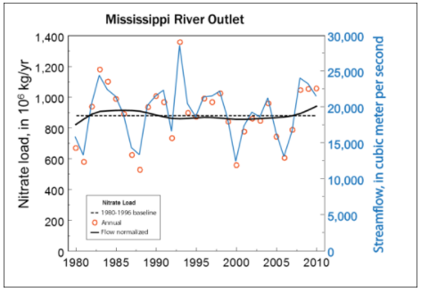

Publicly available water-quality data for streams and rivers were obtained from the U.S. Geological Survey's National Water Information System (NWIS) database at
https://waterdata.usgs.gov/usa/nwis and the U.S. Environmental Protection Agency's STOrage and RETrieval (STORET) database at
https://www.epa.gov/waterdata/storage-and-retrieval-and-water-quality-exchange. In addition, relevant water-quality records that currently are not being housed in NWIS or STORET were requested from water resource agencies in each state. The final database includes 147 million water-quality records from 468,000 sites and 518 organizations. These organizations include Federal and State agencies, Tribes, counties, universities, non-governmental organizations, and other organizations like waste-water treatment facilities.
Ecological data were obtained from the U.S. Geological Survey's BioData database at
https://aquatic.biodata.usgs.gov/. FloDaily wstreamflow data were obtained from NWIS; selected non-USGS flowstreamflow data were obtained from state databases.
Nutrients - total nitrogen, total phosphorus, nitrate, ammonia, and orthophosphate
Pesticides - 2,6-Diethylaniline, Acetochlor, Alachlor, Atrazine, Carbaryl, Carbofuran, Chlorpyrifos, Cyanazine, Dacthal, Deethylatrazine, Desulfinylfipronil, Desulfinylfipronil amide, Diazinon, Dieldrin, EPTC, Ethoprophos, Fipronil, Fipronil sulfide, Fipronil sulfone, Fonofos, Malathion, Metolachlor, Metribuzin, Molinate, Pendimethalin, Prometon, Propanil, Propargite, Propyzamide, Simazine, Tebuthiuron, Thiobencarb, Trifluralin
Sediment - suspended sediment and total suspended solids
Carbon - dissolved organic carbon and alkalinity
Salinity - specific conductance, total dissolved solids, chloride, sulfate
Aquatic ecology - fish, invertebrates, and algae
1972-2012, 1982-2012, 1992-2012, 2002-2012. These decadal trend periods allowed us to start our evaluations at the passage of the Clean Water Act in 1972 and the initiation of the National-Water Quality Assessment Program in 1992. They also allowed us to evaluate trends in recent years, when many management programs have been initiated.
As with any water-quality study, there is a lag between sample collection and data release due to laboratory analysis and data quality review, and another lag between data release and the release of study findings due to analysis and interpretation. However, a much longer lag occurred in this study because we used water-quality data from 518 different organizations. The data were provided to us in many different formats; data from the different organizations had different nomenclature; and many of the records had incomplete or missing metadata. Resolving these issues (when even possible) required over three years of effort. The resulting database is one of the largest water-quality databases ever compiled in the United States, and the trend results allow for evaluation of the collective efforts of major water agencies across the country in a way that has never been possible before.
We used Weighted Regressions on Time, Discharge, and Season (WRTDS) (Hirsch and DeCicco, 2015) for nutrients, sediment, carbon, and salinity. We used the seasonal wave model with flowstreamflow adjustment (SEAWAVE-Q) (Vecchia and others, 2008) for pesticides. We used a newly developed Kendall-based test for aquatic ecology (Oelnser and others, 2017).
As we began reviewing the compiled water-quality data set, it was immediately clear that there were some sites we could not use for a variety of reasons, such as an insufficient number of samples, missing metadata (see FAQ #8), etc. We set up a series of screening steps to ensure the data we used for trend analysis all met a minimum standard. Our screening steps are described in detail in Oelsner and others, 2017. Many important details are documented there, but we provide a very high-level, brief summary here. The criteria for aquatic ecology are slightly more liberal than for the other constituents because of the relative dearth of long-term monitoring for pesticides and aquatic ecology.
Generally, we screened nutrients, sediment, carbon, and salinity data sets for (1) at least quarterly data in the first two years and last two years of the trend period, (2) at least quarterly sampling in at least 70% of all years, (3) availability of suitable daily streamflow for the entire period, (4) 10-14% of samples collected at higher streamflow conditions during each decade, (5) no more than 50% censored data. Each trend period was screened separately.
We screened pesticides data sets for (1) at least three quarterly samples in either of the first two years and either of the last two years of the trend period, (2) at least three quarterly samples in at least 50% of all years, (3) no gaps longer than 3 to 5 years (depending on the trend period), (4) availability of suitable daily streamflow through one year prior to the start of the trend period, (5) at least 10 uncensored concentrations. Each trend period was screened separately.
We screened aquatic ecology data sets for (1) data within one year of the start year and one year of the end year of the trend period, (2) data in 50% of years of each decade, (3) no gaps longer than 4 years, (4) availability of measured or modeled daily flow data through 240 days prior to the first sample. Each trend period was screened separately.
The pesticide screening criteria differ from criteria for other constituents for a variety of reasons, some particular to the trend analysis method, others particular to the nature of pesticide concentrations in surface water.
The method (SEAWAVE-Q; Vecchia and others, 2008, p. 1309) was specifically developed to address a "number of difficulties often found in pesticide data, such as strong seasonality in response to use patterns, high numbers of concentrations below laboratory reporting levels (RLs), complex relations between streamflow and concentration, and intermittent or changing sampling frequencies (both inter-annually and intra-annually)."
Pesticide concentrations in surface water have a strong seasonal signal depending on the time of application (there may one or more general periods of application depending on the pesticide, some are post-emergent spring applied, others may be pre-emergent applied in the spring and/or fall, other patterns may exist depending on the climate and crop). For example, in Vecchia and others (2008) figure 1 shows that seasonal variability in atrazine is not closely related to seasonal variability in streamflow. "Thus, the seasonal hydrologic cycle has little effect on atrazine concentration. Rather, seasonal change in application amounts is the major source of variability. The same generally holds for other pesticides and sites as well. This is in sharp contrast to other more naturally occurring or chemically stable water-quality constituents, such as dissolved major ions or nutrients, whose concentrations tend to be more directly related to streamflow" (Vecchia and others, 2008, p. 1311). SEAWAVE-A specifically models the seasonality in application and a "decay" rate (depending on the properties of the chemical, concentrations decrease at varying rates after the peak application period). Because of these important characteristics of pesticide concentrations is surface water and the features of SEAWAVE-Q, pesticide sites do not require the same screening for highflow samples that are needed for some other constituents/methods.
SEAWAVE-Q uses maximum likelihood regression and survival analysis and therefore is robust for highly censored constituents. Generally, only 10 noncensored values are needed for a trend period (provided a sufficient number of censored samples and streamflow data). The default minimum number of censored values in WRTDS is 50. "If there are too few uncensored observations, the program [WRTDS] will iterate, making the windows wider until the number increases above this minimum... The method has never been tested in situations where there are very few uncensored values" (Hirsch and DeCicco, 2015, p. 46).
SEAWAVE-Q does not require streamflow on the day of sampling only, but requires long-term streamflow monitoring (at least a year prior to the start of the trend period for the national trends study) in order to calculate and incorporate streamflow anomalies. Small gaps in the streamflow record can be estimated, but gages discontinued for 30 days or more during a trend analysis period cause issues, such as a gap in the model, or disqualification of the site, depending on the length and timing of the gap.
SEAWAVE-Q is robust to gaps in the samples, provided the samples meet some criteria to be representative to the trend period. In the urban pesticide trends study (Ryberg and others, 2010, 7), at least 10 uncensored values were required and "the minimum sampling criteria for a particular site to be considered adequately representative of a particular 9-year trend assessment period were (1) at least 2 years with four or more samples collected during the first 5 years of the assessment period and (2) at least 2 years with four or more samples collected during the last 5 years of the assessment period." Examples are shown in Ryberg and others (2010, figures 2-5) for sites with varying numbers of samples per year and with high degrees of censoring. In the pesticide trends study for major river basins of the US (Ryberg and others, 2015, p. 8), "the minimum sampling criteria for a particular site to be considered adequately representative of a particular 10-year trend period were to have (1) at least 10 uncensored values after recensoring (calculating qlow50 where applicable and recensoring at that level), (2) at least 5 years of samples, (3) 6 or more samples in at least 2 of the first 5 years of the period, and (4) 6 or more samples in at least 2 of the last 5 years of the period."
These issues have been thoroughly explored and tested in a number of published studies (Vecchia and others, 2008, Sullivan and others, 2009; Ryberg and others, 2010; Ryberg and others, 2014) as well as in numerous unpublished exploratory data analysis exercises refining the seasonality and decay components of the model, testing the effect of gaps in the data, and testing the degree of censoring.
In many cases, water-quality data did not have enough information for us to unambiguously interpret the value. We use the term metadata to describe information that accompanies the water-quality value itself. Critical metadata includes the site location, the sample date, the water-quality constituent being reported (e.g. nitrate, alkalinity, suspended sediment), the physical medium that was sampled (e.g. water, soil, gas), the reported units (e.g. mg/L or µg/L), whether a sample was filtered or unfiltered, whether a sample is reported in elemental or molecular form (e.g. nitrate as nitrogen or nitrate as nitrate), and number of others. Data without sufficient metadata were excluded from our analyses.
Yes, you can access our screened data and the associated metadata through the following U.S. Geological Survey data releases:
DeCicco, L.A., Sprague, L.A., Murphy, J.C., Riskin, M.L., Falcone, J.A., Stets, E.G., Oelsner, G.P., and Johnson, H.M., 2017, Water-quality and streamflow datasets used in the Weighted Regressions on Time, Discharge, and Season (WRTDS) models to determine trends in the Nation's rivers and streams, 1972-2012: U.S. Geological Survey data release,
http://dx.doi.org/10.5066/F7KW5D4H.
https://www.sciencebase.gov/catalog/item/57c44124e4b0f2f0cebc8a2a and DOI is
http://dx.doi.org/10.5066/F7KW5D4H.
Ryberg, K.R., Murphy, J.C., Falcone, J.A., Riskin, M.L., Wieben, C.M., and Vecchia, A.V., 2017, Pesticide concentration and streamflow datasets used to evaluate pesticide trends in the Nation's rivers and streams, 1992-2012: U.S. Geological Survey data release,
http://dx.doi.org/10.5066/F7BC3WPC. https://www.sciencebase.gov/catalog/item/57c441afe4b0f2f0cebc8a37 and DOI is
http://dx.doi.org/10.5066/F7BC3WPC.
Zuellig, R.E. and Riskin, M.L., 2017, Ecological community datasets used to evaluate the presence of trends in ecological communities in selected rivers and streams across the United States, 1992-2012: U.S. Geological Survey data release,
http://dx.doi.org/10.5066/F7G44ND3.
https://www.sciencebase.gov/catalog/item/57c4416fe4b0f2f0cebc8a30 and DOI is
http://dx.doi.org/10.5066/F7G44ND3.
There are many reasons why a site with long-term monitoring data could have been excluded from our study. Generally sites were excluded either because of missing or incomplete metadata, failure to pass one or more of our screening criteria, or poor model fit during trend analysis.
It is important to note that although a site may have been excluded from our study because of our specific objectives, data from the site could still be valuable for other studies looking at different trend periods or studies with different objectives altogether.
There are a few reasons why this could be happening. The most likely reason is that the trend periods are different. The choice of start and end years can make a big difference. For example, cigarette smoking in the United States increased in the first part of the 20th century as mass production, advertising, and addiction increased. After the first Surgeon General's report in 1964 on the harmful effects of smoking, smoking rates decreased. If we were to determine a trend in cigarette consumption between 1900 and 2002, the result would show an increase. However, if we were to determine a trend between 1970 and 2002, the result would show a decrease. The same potential difference can occur with water-quality trends any time the direction of change in concentration or load reverses, or any time the rate of change slows or becomes more rapid.

Another common reason for trend results at the same site to be different-even when the trend period is the same-is the use of different trend methods. Because periodic or random factors like season or streamflow can add noise to a water-quality time series, statistical methods are necessary to separate the signal (the trend) from the noise. The choice of trend method can affect how much of the noise is removed, which in turn can affect the power of the trend test. With a robust enough data set, the differences between statistical methods should be minor. We conducted extensive sensitivity testing to develop a set of screening criteria that would lead us to sites with robust data sets. As a result, any differences between our results and your results for the same trend period should be minor, although there may be rare exceptions.
One exception to the above that might cause differences in trend results at the same site is the choice of whether or not to flow normalize. A trend in concentrations or loads that are flow-normalized (or flow-adjusted) is often different from a trend in concentrations or loads that are not flow normalized. See FAQ #12 for more information on flow normalization.
In a smaller number of cases, differences in trend results may be related to the characteristics of our respective data sets. For instance, we may have combined data from two agencies that were sampling at the same location, whereas you only used data from one of the sources. Or we may have excluded some data that were inadequately documented in our database, whereas you may have included those data because you had adequate documentation locally.
Changes in concentration and load over time can be strongly influenced by random and systematic variations in streamflow. Flow normalization removes the variation in concentration or load that is due to variations in streamflow. In the case where the streamflow variability is only random, flow normalization will remove some of the non-trend noise, making the signal (the trend) easier to detect. In the case where the flow variability is systematic (e.g. where there is a trend in flow), the trend in flow may be causing all or part of the trend in water quality. Flow normalization will remove the part of the water-quality trend that is caused by the trend in flow, leaving behind the trend in water quality that is caused by other factors. These other factors are usually human actions, like land development, changes in pesticide application, or implementation of best management practices. Removing the influence of the trend in flow improves our ability to evaluate the effects of human actions on water quality.
In situations where natural changes in flow are affecting year-to-year variability in concentration or load, flow normalization also helps us to avoid mistaking the effects of natural changes in flow for progress in cleaning up water quality. In the example below showing nitrate loads entering the Gulf of Mexico from the Mississippi River, there were several years when loads dropped below the 1980-1996 baseline used to measure progress in reducing loading to the Gulf of Mexico. We could interpret that to mean we have made substantial progress in reducing loads to the Gulf as a result of our management practices in the watershed. However, the pattern in load closely follows the pattern in streamflow, indicating that the low loads occurred in years when streamflow was naturally low. When we remove that streamflow-related variability, the pattern in streamflow normalized loads shows very little change that can be tied to human actions between 1980 and 2010.
See Hirsch and DeCicco (2015) for more information on flow normalization of nutrients, sediment, salinity, and carbon data and Vecchia and others (2008) for more information on flow normalization of pesticide data. Oelsner and others (2017) describes the flow adjustment of ecological trend data.

A likelihood-based approach is used to report these trend results. When the trend is 'likely up', the chance of the trend being upward is at least an 85 out of 100. When the trend is 'likely down', the chance of the trend being downward is at least an 85 out of 100. When the trend is 'somewhat likely up', the chance of the trend being upward is between 70 and 85 out of 100. When the trend is 'somewhat likely down', the chance of the trend being downward is between 70 and 85 out of 100. When the trend is 'about as likely as not', the chance of the trend being either upward or downward is less than 70 out of 100.
This likelihood-based approach is used as an alternative to the null-hypothesis significance testing (NHST) approach that is often used when reporting water-quality trends. The likelihood- based approach gives people more intuitive information on the certainty of a trend estimate, and avoids the arbitrary classifications imposed by selecting an alpha value to assess significance. For example, in the NHST approach, a trend with a p-value of 0.099 could be classified as significant while a different trend with a p-value of 0.11 could be classified as nonsignificant. In reality, there is no meaningful difference between these two p-values.
Consider an example where the chance of an upward trend in nitrate concentrations at a site is 80 out of 100. Using the NHST approach, the trend would be reported as non-significant. Using the likelihood-based approach, the trend would be reported as 'somewhat likely up'. The NHST approach could lead to a false sense of security because it indicates that there isn't strong proof of a growing problem. The likelihood-based approach indicates instead that it is somewhat likely conditions in the stream are not improving, giving people more information to use when making decisions about watershed management.
For more information on the likelihood-based approach, please see Hirsch and others (2015).
Hirsch, Robert M., Archfield, Stacey A., and DeCicco, Laura A., 2015, A bootstrap method for estimating uncertainty of water quality trends, Environmental Modelling and Software, 73, 148-166, http://www.sciencedirect.com/science/article/pii/S1364815215300220
Hirsch, R.M., and De Cicco, L.A., 2015, User guide to Exploration and Graphics for RivEr Trends (EGRET) and dataRetrieval-R packages for hydrologic data (version 2.0, February 2015): U.S. Geological Survey Techniques and Methods book 4, chap. A10, 93 p., http://dx.doi.org/10.3133/tm4A10
Oelsner, G.P., Sprague, L.A., Murphy, J.C., Zuellig, R.E., Johnson, H.M., Ryberg, K.R., Falcone, J.A., Stets, E.G., Vecchia, A.V., Riskin, M.L., De Cicco, L.A., Mills, T.J., and Farmer, W.H., 2017, Water- Quality Trends in the Nation's Rivers and Streams 1972-2012-Data Preparation, Statistical Methods, and Trend Results: U.S. Geological Survey Scientific Investigations Report 2017-xxxx, xxx p.
Ryberg, K.R., Vecchia, A.V., Gilliom, R.J., and Martin, J.D., 2014, Pesticide trends in major rivers of the United States, 1992–2010: U.S. Geological Survey Scientific Investigations Report 2014–5135, 63 p., http://dx.doi.org/10.3133/sir20145135.
Ryberg, K.R., Vecchia, A.V., Martin, J.D., and Gilliom, R.J., 2010, Trends in pesticide concentrations in urban streams in the United States, 1992–2008: U.S. Geological Survey Scientific Investigations Report 2010–5139, 101 p.
Sullivan, D.J., Vecchia, A.V., Lorenz, D.L., Gilliom, R.J., and Martin, J.D., 2009, Trends in pesticide concentrations in corn-belt streams, 1996–2006: U.S. Geological Survey Scientific Investigations Report 2009–5132, 75 p., http://pubs.usgs.gov/sir/2009/5132/.
Vecchia, A.V., Martin, J.D., and Gilliom, R.J., 2008, Modeling variability and trends in pesticide concentrations in streams: Journal of the American Water Resources Association, v. 44, no. 5, p. 1308–1324, http://onlinelibrary.wiley.com/doi/10.1111/j.1752-1688.2008.00225.x/pdf